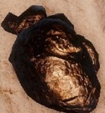
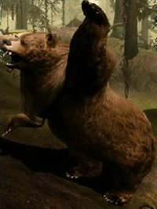

Costa da Tormenta
A Costa da Tormenta é um trecho de área costeira pouco povoada ao longo do mar do despertar. As antigas ruínas dos Anões - abandonadas desde a Idade Divina - ainda seguem a costa, seus arquitetos se esqueceram por muito tempo desse lugar que agora tem como vagantes os templários vermelhos.
Plantas
| Raiz Élfica | Encontrada perto das árvores. |

|
| Lótus de Sangue | Encontrada perto da água. |

|
| Erva Comum | Também encontrada perto da água. |

|
| Lótus Negro | Encontrado ao longo da beira da praia. |

|
| Louro do Profeta(RARO) | Caminhando junto a praia você vai encontrar o "rio comprido". Subindo ele até sua nascente você encontrará uma caverna e nela você acha o Louro do Profeta. |

|
Minérios
| Ferro | Encontrado em rochas. |  |
| Pedra Serpente | Assim como o ferro também é encontrada em rochas. |

|
| Pedra Verão. | A região da Costa da Tormenta é muito montanhosa e por essa razão pode se obter Pedra Verão procurando em rochas. |

|
Outros
| Aranha Gigante | Encontrada na mesma caverna que o Louro do Profeta e também em qualquer outra caverna da região, o spawn delas é quase certo. |

|
| Predador Oculto | Encontrado em cavernas próximas a beira da praia. Se parece com um dinossauro bem pequeno. O spawn é revesado com as aranhas. |

|
| Cão de caça Hessarian | Geralmente acompanha os soldados Hessarian, spawn aleatório.Tem uma missão que você terá que lidar com esse bando Hessarian. E uma opção que você vai ter é conseguir o pingente da piedade e ir matar o chefe deles, depois disso os outros soldados irão ajudar a inquisição. |

|
| Filhote de Dragão | Caminhando rente a praia desde o primeiro acampamento, ache o primeiro ocularum e perto desse ocularam têm filhores de dragão. |

|
| Gigante | Encontrado enquanto você desbrava a costa da praia. | |
| Nug | Existe em várias partes do mapa, aparece mais em cavernas. |

|
| Ursos | Aparecem em maior número nas Terras Distenates. Mas principalmente vão aparecer ao longo do "Rio comprido". |  |
| Carneiros | Espalhado pelo mapa. |

|
| Tosquete | Assim como os carneiros tem spawn aleatório, entretanto, no "Rio comprido" a chance de encontrar eles é maior. |
 Clique aqui para subir.
Clique aqui para subir.